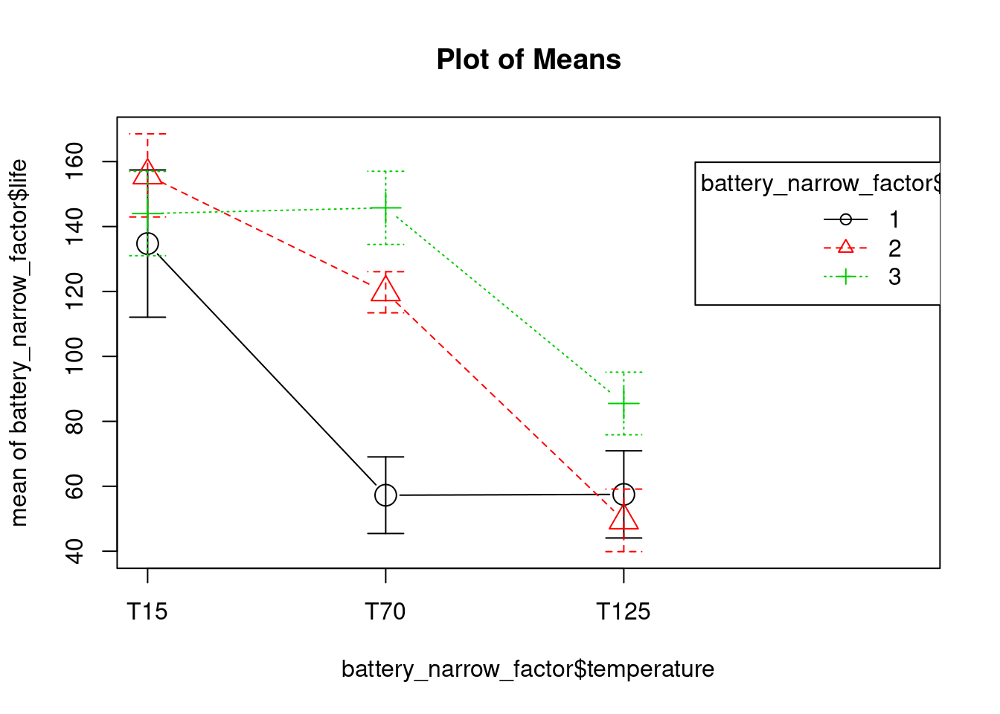

4.3 two-factors ANOVA, fixed effects model
5.3
4.3.1 Battery life example
Load and prepare data for analysis:
battery <- read.csv(sep = ";", header = TRUE,
paste0(working_folder, "5 battery.csv"))
# Converting into a narrow table with a factor for utilisation with ggplot2
# syntax: gather(data,
# name of the new key column (that replaces the names of the columns to be gathered),
# name of the new value column (where the values go),
# name of the columns to be gathered)
battery_narrow <- gather(battery,
temperature,
life,
T15, T70, T125)
battery_narrow_factor <- battery_narrow
battery_narrow_factor$material <- as.factor(battery_narrow$material)
battery_narrow_factor$temperature <- ordered(battery_narrow$temperature,
levels = c("T15", "T70", "T125"))4.3.2 Analysis of variance
battery_lm_factor <- lm(life ~ temperature + material + temperature:material,
data = battery_narrow_factor)
battery_aov <- aov(battery_lm_factor)
summary(battery_aov)## Df Sum Sq Mean Sq F value Pr(>F)
## temperature 2 39119 19559 28.968 1.91e-07 ***
## material 2 10684 5342 7.911 0.00198 **
## temperature:material 4 9614 2403 3.560 0.01861 *
## Residuals 27 18231 675
## ---
## Signif. codes: 0 '***' 0.001 '**' 0.01 '*' 0.05 '.' 0.1 ' ' 14.3.3 DoE and Anova plots
# Basic plot from Stats package (my favorite)
interaction.plot(x.factor = battery_narrow_factor$temperature,
trace.factor = battery_narrow_factor$material,
response = battery_narrow_factor$life,
trace.label = "Material",
xlab = "temperature [°C]",
ylab = "life [h]")
# Alternative plot from the RcmdrMisc package ("Stats facile avec R")
plotMeans(response = battery_narrow_factor$life,
factor1 = battery_narrow_factor$temperature,
factor2 = battery_narrow_factor$material)
# Just for my curiosity a boxplot for comparison
ggplot(battery_narrow_factor, aes(x = temperature, y = life, color = material)) +
geom_boxplot()
# And also a scatterplot
ggplot(battery_lm_factor, aes(x = temperature, y = life, color = material)) +
geom_point() +
geom_smooth(method = "lm", se = FALSE) # not clear why the lm line is not plotted, to be investigated
Note: book example correctly reproduced.
4.3.4 R², coefficient of determination
summary(battery_lm_factor)##
## Call:
## lm(formula = life ~ temperature + material + temperature:material,
## data = battery_narrow_factor)
##
## Residuals:
## Min 1Q Median 3Q Max
## -60.750 -14.625 1.375 17.937 45.250
##
## Coefficients:
## Estimate Std. Error t value Pr(>|t|)
## (Intercept) 83.167 7.501 11.087 1.48e-11 ***
## temperature.L -54.624 12.992 -4.204 0.000257 ***
## temperature.Q 31.741 12.992 2.443 0.021385 *
## material2 25.167 10.608 2.372 0.025059 *
## material3 41.917 10.608 3.951 0.000503 ***
## temperature.L:material2 -20.506 18.374 -1.116 0.274242
## temperature.Q:material2 -45.724 18.374 -2.488 0.019293 *
## temperature.L:material3 13.258 18.374 0.722 0.476759
## temperature.Q:material3 -57.053 18.374 -3.105 0.004434 **
## ---
## Signif. codes: 0 '***' 0.001 '**' 0.01 '*' 0.05 '.' 0.1 ' ' 1
##
## Residual standard error: 25.98 on 27 degrees of freedom
## Multiple R-squared: 0.7652, Adjusted R-squared: 0.6956
## F-statistic: 11 on 8 and 27 DF, p-value: 9.426e-07Note: book example correctly reproduced.
R^2 = 0.7652, That is, about 77 percent of the variability in the battery life is explained by the plate material in the battery, the temperature, and the material type–temperature interaction.
4.3.5 Model adequacy checking
5.3.3
4.3.6 Residuals normality check & outliers
Q-Q plot + Shapiro-Wilk test
battery_residuals <- battery_aov[["residuals"]]
qqnorm(battery_residuals, datax = TRUE);qqline(battery_residuals, datax = TRUE)
shapiro.test(battery_residuals)##
## Shapiro-Wilk normality test
##
## data: battery_residuals
## W = 0.97606, p-value = 0.6117battery_tidyfit <- augment(battery_lm_factor)p > 0.05 indicates that the residuals do not differ significantly from a normally distributed population.
According to Montgomery the residual of -60.75 (hours) for the temperature value of 15°C maybe an outlier as it’s standardized value is > 2. This can be observed more easily in the battery_tidyfit table created with the augment function from the broom package.
Standardized residuals graph
plot(battery_aov, which = 2)
4.3.7 Plot of residuals versus fitted values
plot(battery_aov, which = 1)
4.3.8 Sample size calculation
Refer to “Statistiques faciles avec R,” page 233. Cohen’s effect size is calculated with the eta squared from the model (intriguing is the same value as the R²…). In this case with 2 replicates we obtain a power of 90% and an alpha of 1%. I’ve not managed here to replicate the values from the Montgomery book.
battery_cohend_aov <- 40 / 25 # Cohen's effect size = difference of means / sd
pwr.anova.test(k = 3,
n = 4,
f = battery_cohend_aov,
sig.level = 0.05)##
## Balanced one-way analysis of variance power calculation
##
## k = 3
## n = 4
## f = 1.6
## sig.level = 0.05
## power = 0.9892439
##
## NOTE: n is number in each groupI’ve managed to almost reproduce the book result (I obtained a power of 98%, in the book 94%) by calculating the effect size by dividing the life difference of 40 hours by the standard deviation of 25h given in the example and feeding all this in the pwr.anova.test with n = 4 repetitions.
The books “Statistiques faciles avec R” proposes to use the eta but this gives very different results. battery_eta2 <- etaSquared(battery_aov)[1] battery_cohend_aov <- sqrt(battery_eta2 / (1 - battery_eta2))
4.3.9 Model with no interaction
# Removing the interaction from the model:
battery_lm_factor_no_int <- lm(life ~ temperature + material,
data = battery_narrow_factor)
battery_aov_no_int <- aov(battery_lm_factor_no_int)
# Comparing Anova results with and without:
summary(battery_aov)## Df Sum Sq Mean Sq F value Pr(>F)
## temperature 2 39119 19559 28.968 1.91e-07 ***
## material 2 10684 5342 7.911 0.00198 **
## temperature:material 4 9614 2403 3.560 0.01861 *
## Residuals 27 18231 675
## ---
## Signif. codes: 0 '***' 0.001 '**' 0.01 '*' 0.05 '.' 0.1 ' ' 1summary(battery_aov_no_int)## Df Sum Sq Mean Sq F value Pr(>F)
## temperature 2 39119 19559 21.776 1.24e-06 ***
## material 2 10684 5342 5.947 0.00651 **
## Residuals 31 27845 898
## ---
## Signif. codes: 0 '***' 0.001 '**' 0.01 '*' 0.05 '.' 0.1 ' ' 1As noted previously, both main effects are significant (p < 0.05).
However, as soon as a residual analysis is performed for these data, it becomes clear that the no-interaction model is inadequate:
# Normality of residuals is worse
battery_residuals_no_int <- battery_aov_no_int[["residuals"]]
qqnorm(battery_residuals_no_int, datax = TRUE);qqline(battery_residuals_no_int, datax = TRUE)
# But it still passes the Shapiro test
shapiro.test(battery_residuals_no_int)##
## Shapiro-Wilk normality test
##
## data: battery_residuals_no_int
## W = 0.97846, p-value = 0.6932# No standardize residual above 2 either:
battery_tidyfit_no_int <- augment(battery_lm_factor_no_int)plot(battery_aov_no_int, which = 2)
# It is finally in the plot residuals vs fit that we can clearly see an issue:
plot(battery_aov, which = 1)
plot(battery_aov_no_int, which = 1)
Any pattern in these quantities is suggestive of the presence of interaction. Figure 5.15 shows a distinct pattern as the quantities move from positive to negative to positive to negative again.